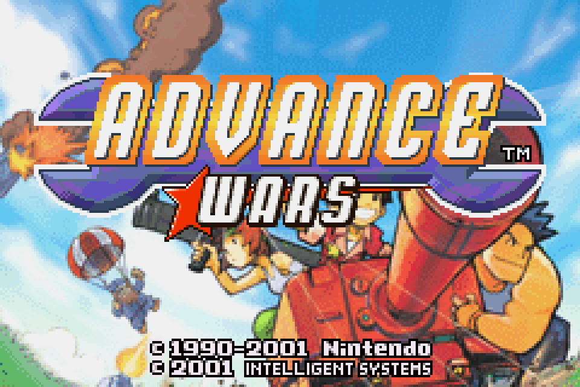

Advance Wars


Advance Wars[a] is a turn-based strategy video game developed by Intelligent
Systems and published by Nintendo for the Game Boy Advance. It is the seventh
title in the Wars series of video games, and the first in the Advance Wars sub-
series. The game takes place on a fictional continent, where two nations, Orange
Star and Blue Moon, have been fighting each other for years. The conflict enters
a new stage when an Orange Star commanding officer named Andy is accused of
attacking the armies of two other nations, Yellow Comet and Green Earth,
without reason, resulting in a worldwide war.
As with previous Wars titles, Advance Wars was not originally intended for release
outside Japan, due to Nintendo feeling that Western consumers would not be
interested in turn-based games because of their complex mechanics.[citation needed]
In order to alleviate this, the developers made the mechanics easy to understand,
adding in an in-depth tutorial that did not require players to read the manual.
Designer Kentaro Nishimura commented that the game's success shifted Nintendo's
attitude over Western tastes, and that same success is frequently credited as a driving
force for Nintendo bringing another Intelligent Systems franchise, Fire Emblem,
outside of Japan beginning with the seventh installment.
Gameplay
he objective in each mission is to defeat the enemy army. There are two ways to
defeat an opponent: destroy every one of the opponent's units on the map, known
as routing the enemy, or capture the opponent's headquarters. However, some
maps have specific objectives, such as capturing a certain number of cities to claim
victory or survive a set number of days. The available modes of play include "Field
Training" which offers tutorial missions, a campaign mode which carries the game's
storyline, the "War Room" which is a collection of maps on which the player strives
for high scores, as well as multiplayer modes and a map design mode. The
"Campaign" and "War Room" modes both help to rank the player up (from Rank
#100 to Rank #1) and to earn coins to unlock COs and maps in the "Battle Maps"
shop. The modes also gives the player an additional rank for effort after winning a
battle on that map, which assesses the player's speed, power, and technique in that
battle; speed being the number of days spent trying to win the battle, power being
how many enemy units were defeated, and technique is the number of the player's
units that survived (in percentage).
There are 18 different types of military units in Advance Wars. Each unit has a set
amount of attack power, vision range in fog of war, movement range and type, and
fuel supply. Some units are equipped with two weapons, which can be used against
different types of enemy units. There are both direct and indirect attack units, as
well as unarmed transport units. All the units are either infantry, vehicles, ships, or
air units. Units have specific strengths and weaknesses. One rule of thumb that units
have to adhere to is that a portion of their fuel supply is used up each turn; ground
units who run out cannot move, while air and naval units who run out are destroyed
as they consume fuel even when stationary. Submarines consume more fuel than
usual when submerged.